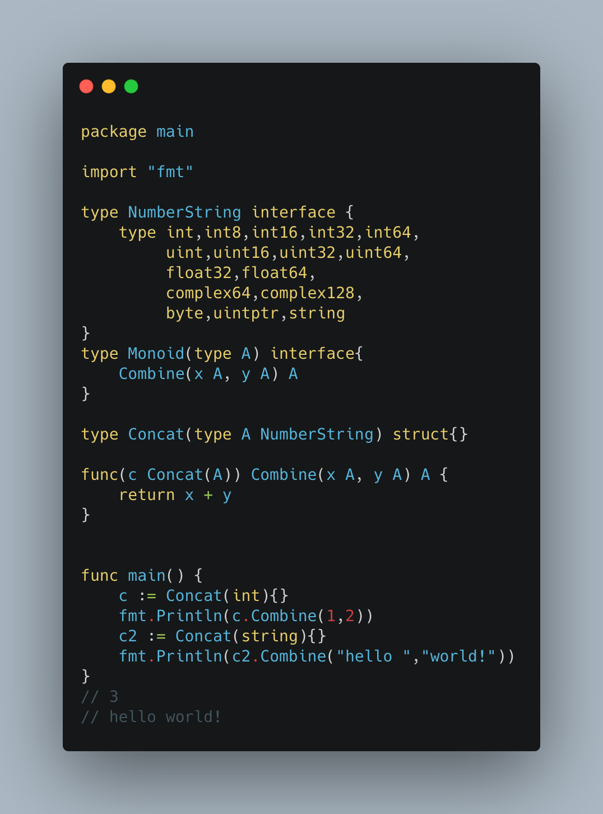

昨天 Ian Lance Taylor 和 Robert Griesemer 发布了Go泛型的新的草案(The Next Step for Generics ), 国内外的Gopher反响非常的热烈，大家纷纷对草案和这个文章进行了解读，并且感觉这一版的Go泛型设计基本接近于Go的泛型目标，总之比前一个方案好太多了。
同时Ian也提供了一个在线编译的工具go2go ，可以对Go泛型编程进行尝鲜。
如果在本地编译呢？
事实上Go的源代码会同步到github中，所以你只需要下载相应的分支，自己进行编译，就可以得到这个go2go工具。本文指导你如果下载、编译、使用这个工具，而且你还可以学习到Go泛型代码是如何转换成Go1代码，然后运行的。
当然，还是那句话，当前的设计和工具都是为草案版设计的，正式版的时候会有所变化。
安装
首先下载Go代码，分支是dev.go2go:
1
2
3
4
5
6
7
8
9
10
11
12
13
14
15
16
17
18
19
20
21
22
$ cd $HOME
$ mkdir go2go
$ cd go2go
$ git clone -b dev.go2go git@github.com:golang/go.git goroot
$ cd goroot
$ cd src
$ ./make.bash
$ export GO2GO_DEST=$HOME /go2go/goroot
$ export PATH="$GO2GO_DEST /bin:$PATH "
$ export GOROOT="$GO2GO_DEST "
$ export GO2PATH="$GO2GO_DEST /src/cmd/go2go/testdata/go2path"
$ go version
$ go version devel +5 e754162cd Thu Jun 18 05 :58 :40 2020 +0000 darwin/amd64
通过上面的步骤，你就可以编译好最新的支持Go泛型的Go工具。
编写Go泛型代码
下一步让我们编写一个Go泛型的应用:

在这个例子中，我们定义了一个NumberString接口，这是接口的一个扩展功能，你可以通过以下的声明，只让数字或者字符串实现这个接口:
1
2
3
4
5
type int ,int8 ,int16 ,int32 ,int64 ,
uint ,uint16 ,uint32 ,uint64 ,
float32 ,float64 ,
complex64 ,complex128 ,
byte ,uintptr ,string
主要的用途还是为了对泛型中的类型进行约束。因为我们要在使用泛型参数的函数体中使用+符号，只有数字和字符串支持这个操作符，所以为了让函数能正常的编译，你需要对类型参数进行约束。Go编译器在编译的时候，发现对象是NumberString的对象，所以可以使用+操作符进行相加。
在这种情况下，NumberString接口不能被其它类型所实现，比如下面的代码就会编译出错：
1
2
var c3 NumberString = time.Now()
fmt.Println(c3)
另外需要注意的是go2的代码文件当前以.go2为后缀，以便和Go1的代码相区分。
下面就可以编译运行上面的代码了:
1
2
3
$ go tool go2go run monoid.go2
3
hello world!
Go2代码是如何编译的？
go2go把Go2代码转换成go1的代码进行运行的，也就是说通过编译期的转换，提供泛型的支持。 所以Go的泛型设计相对简单，并且Go2也提供了向下兼容。
你可以通过下面的命令将Go2代码转换成Go1的代码，可以查看go2go做了什么魔法：
1
$ go tool go2go translate monoid.go2
转换成的Go1代码如下:
1
2
3
4
5
6
7
8
9
10
11
12
13
14
15
16
17
18
19
20
21
22
23
24
25
26
27
28
29
30
31
32
33
34
35
36
37
38
// Code generated by go2go; DO NOT EDIT.
//line monoid.go2:1
package main
//line monoid.go2:1
import "fmt"
//line monoid.go2:23
func main
c := instantiate୦୦Concat୦int{}
fmt.Println(c.Combine(1 , 2 ))
c2 := instantiate୦୦Concat୦string{}
fmt.Println(c2.Combine("hello " , "world!" ))
}
//line monoid.go2:28
type instantiate୦୦Concat୦int struct{}
//line monoid.go2:18
func (c instantiate୦୦Concat୦int,) Combine(x int, y int) int {
return x + y
}
//line monoid.go2:20
type instantiate୦୦Concat୦string struct{}
//line monoid.go2:18
func (c instantiate୦୦Concat୦string,) Combine(x string, y string) string {
return x + y
}
//line monoid.go2:20
type Importable୦ int
//line monoid.go2:20
var _ = fmt.Errorf
可以看到，对于代码中的泛型代码，因为在实例化的时候需要实例化类型参数，所以go2go将泛型代码进行了特化 ,针对每个类型生成了一个特化的类型。
所以在我们上面的例子中，c1和c2的类型是不同的，它们的类型分别是instantiate୦୦Concat୦int和instantiate୦୦Concat୦string。采用instantiate做前缀，类型做后缀int,以୦୦和୦做连字符。
如果类型参数相同，会采用同一个特化的类型，比如下面例子中的c1和c3,都使用同一个特化的类型instantiate୦୦Concat୦int：
1
2
3
4
5
6
7
8
9
func main
c := Concat(int){}
fmt.Println(c.Combine(1 ,2 ))
c2 := Concat(string){}
fmt.Println(c2.Combine("hello " ,"world!" ))
c3 := Concat(int){}
fmt.Println(c3.Combine(10 ,20 ))
}
go2go真正的代码逻辑在go/go2go ,它提供了代码解析和转换的逻辑，你可以仔细品一品Ian Lance Taylor 和 Robert Griesemer的实现。相信不久就会有Gopher深度解析的文章问世。
然后go2go的工具入口代码在cmd/go2go 。
捣乱一下
既然go2go工具会将Go2代码翻译成Go1代码，并且对泛型进行特化，如果我们声明了一个类型和特化后的类型名称相同，会怎么样呢？比如下面的代码:
1
2
3
4
5
6
7
8
9
10
11
12
13
14
15
16
17
18
19
20
21
22
23
24
25
26
27
28
29
30
31
32
33
package main
import "fmt"
type NumberString interface {
type int ,int8 ,int16 ,int32 ,int64 ,
uint ,uint16 ,uint32 ,uint64 ,
float32 ,float64 ,
complex64 ,complex128 ,
byte ,uintptr ,string
}
type Monoid(type A) interface {
Combine(x A, y A) A
}
type Concat(type A NumberString) struct {}
func (c Concat(A)) Combine(x A, y A) A {
return x + y
}
type instantiate୦୦Concat୦int struct {}
func main() {
c := Concat(int ){}
fmt.Println(c.Combine(1 ,2 ))
c2 := Concat(string ){}
fmt.Println(c2.Combine("hello " ,"world!" ))
c3 := Concat(int ){}
fmt.Println(c3.Combine(10 ,20 ))
}
我们在代码中声明了instantiate୦୦Concat୦int类型，然后编译运行:
1
2
3
4
5
6
7
$go tool go2go run monoid.go2
# command-line-arguments
/var /folders/gq/jd9v5dd95p570hkztblb8ht40000gn/T/go2go-run795741129/monoid.go2:26 : c.Combine undefined (type instantiate୦୦Concat୦int has no field or method Combine)
/var /folders/gq/jd9v5dd95p570hkztblb8ht40000gn/T/go2go-run795741129/monoid.go2:31 : c3.Combine undefined (type instantiate୦୦Concat୦int has no field or method Combine)
/var /folders/gq/jd9v5dd95p570hkztblb8ht40000gn/T/go2go-run795741129/monoid.go2:32 : instantiate୦୦Concat୦int redeclared in this block
previous declaration at /var /folders/gq/jd9v5dd95p570hkztblb8ht40000gn/T/go2go-run795741129/monoid.go2:22
/Users/xxxxxx/go2go/goroot/bin/go [run monoid.go ] failed: exit status 2
结果是编译失败，因为go2go转换程序也会生成一个重名的instantiate୦୦Concat୦int类型。
当然go2go目前还是概念性的工具，将来肯定会做优化和类型情况的处理, 相关的技术叫做Name mangling ,这是编译器来做的事。